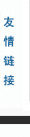
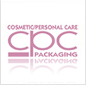
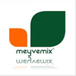

韩流来袭
就医小贴士
MORE>>- 营养美肤创新美速疗法
- 面部整形手术：自体脂肪移植或假体丰太阳穴 【详情】
- 隆鼻手术最受关注的问题
- 隆鼻后如何避免鼻部发红
- 完美俏鼻医学参考标准
- 韩式隆鼻术 让脸部瞬间变立体
- 韩式隐形隆鼻 俏挺鼻梁雕出来
- 隆鼻后如何避免鼻部发红
中心介绍
MORE>>中国医学科学院整形外科医学院（北京八大处整形医院）是中国整形外科的摇篮，是全球唯一一所三级甲等专科医院。北京医科整形美容门诊部是中国医学院外科医院下北京国贸建外soho的分门诊，是方便求美者的快捷通道。
丁小邦做客央视点评真伪玻尿酸
4月8日CCTV2播出的《消费主张――3.15追踪，这样的注射美容，你敢做吗？》中记者将镜头对准了注射美容市场展开了调查，结果真是令人触目惊心，许多受顾客热捧的玻尿酸针剂真正的成分竟然是硅油和早已被国家食品药品监督管理局
- 法制晚报:四大原因整容失败修复难10-15-24
- 法制晚报:丁小邦博士点评田中裕子演慈禧外形10-15-24
- 苹果疾“卧蚕眼”香港富豪选妻有俩金标准10-15-24
- 中国日报北京版：采访丁小邦博士10-03-18
- 法制晚报：除皱，到底是打肉素还是玻尿酸10-15-24
- 健康时报：玻尿酸隆鼻 俏鼻立现10-03-03
A:您好！体检的套餐有很多种，请您拨打我们医院的体检科咨询
- 脸部脂肪粒收费标准是多少？请问
- 体检结果多久就可以出来？高出皮肤一点
- 冷光美白的费用为多少？
- 孕前要做血铅含量检查吗？
- 面部有脂肪粒收费标准是多少？
- W冷光美白的费用为多少？
- 现在很多漂亮的美女，有些可能是天生，大部分都是靠“整形”整出来的。让自不好呢？
- 正方 支持 1020:500
- 首先整形手术存在风险，术中还要忍受疼痛，整形出来后的效果是不是自己满意的还是未知数……
- 反方 支持
- 时尚美疗法
- 无痕动感隆胸
- 青春美眼术
- 美国热烙紧肤除皱
- 鼻部整形塑造
- 激光祛斑
- 成人牙颌畸形
- 烤瓷牙再修复
成功案例
MORE>>某某某
手术项目：隆鼻，下颌角磨削术…某某某
手术部位：下颌角下巴…某某某
手术项目：隆鼻，下颌角磨削术…名医风采
丁小邦博士  
整形首页| 医院介绍| 医院文化| 医院新闻| 先进设备| 医院环境| 医院视频| 怀旧版|
权所有：北京医科整形美容院门诊部（八大处版整形医院国贸门诊部）Copyright@2002―2013
地址：朝阳区建外SOHO 9号楼1-2层底商 电话：4006660400 E-mail:bjykzx@hotmail.com京ICP备08007501